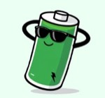
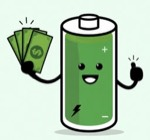
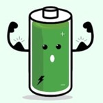

Reprend l'ADN de revolty.fr : fond menthe, en-têtes teal, jaune pastel pour les moments positifs, pastilles d'icônes par type de manip, mascotte batterie dans les moments de respiration. Les alertes restent les éléments les plus saturés de l'écran, le texte reste foncé. Version précédente conservée dans v1/Revolty Installateur v1.dc.html.

tout va bien
clôture réussie
installation crééeBandeau de santé touchable → « À faire », urgentes en tête, chaque manip avec sa pastille d'icône → parc trié par gravité, les OK repliés. Les jours calmes, la mascotte remplace le bandeau.
L'alerte en français, « Pour le client » sur fond jaune, « À vérifier » sur fond menthe. Données : verdict en une phrase, 3 graphes empilés sur le même axe horaire, chiffres clés comparés à l'habituel, frise 8 jours cliquable. Un trou de données n'est jamais un zéro.
Un seul choix obligatoire (Résolu / Pas résolu, visibles sans défiler), puces d'actions selon le type de manip, 2 photos, note dictée avec repli mémo audio. Une fois envoyée : la mascotte félicite, et la manip suivante est proposée.
Obligatoire : n° de série (étape 1) et client, nom + adresse (étape 2). Mode pré-coché « Autoconsommation ». Le test de communication est une vraie étape, jamais bloquante. Récapitulatif avec ce qui reste à compléter plus tard.